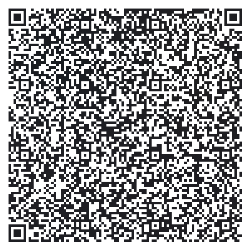

This app allows you to control your PC remotely!
Here are some simple steps to get started:
- Download Blynk App:
- Login or create an account
- Touch the QR icon and point the camera to the code below:

- Go to the Project Settings and send Auth Token to your email
- Run command (replace code with your Auth Token):
node blynk-remote.js eb81...a645